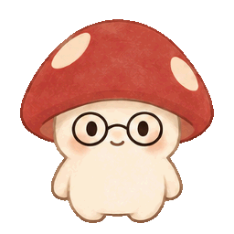
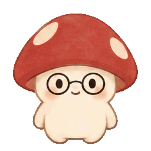
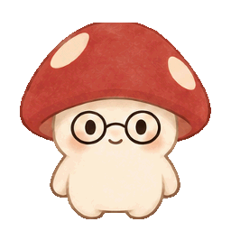

Greeting
A short wave for Home.
Four transparent, one-shot GIF drafts based on the existing mascot. Each plays for about 1.8 seconds. These assets have not replaced the artwork in the app.
A short wave for Home.

A curious tilt for Preferences.

A brief response after a successful action.

A gentle reaction when an action fails.
Reduced-motion preferences show a still image until you choose Replay. No external images, scripts, or network services are used by this page.